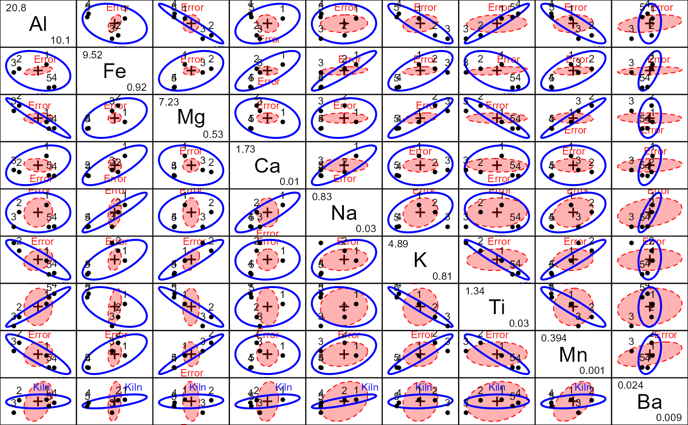
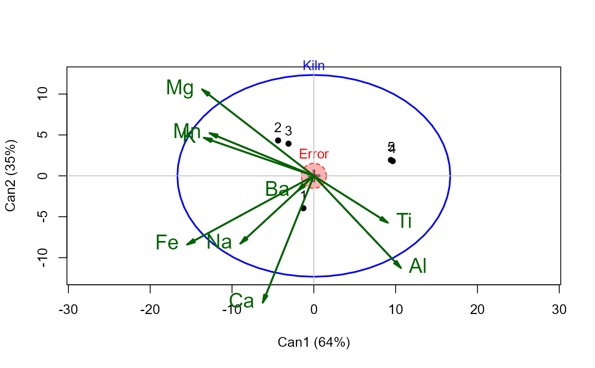
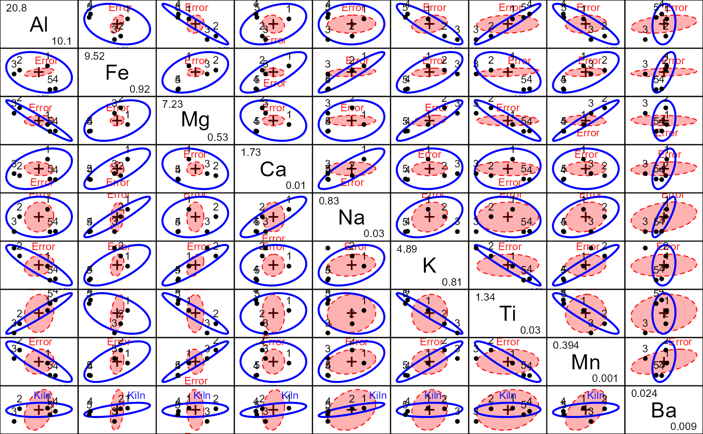
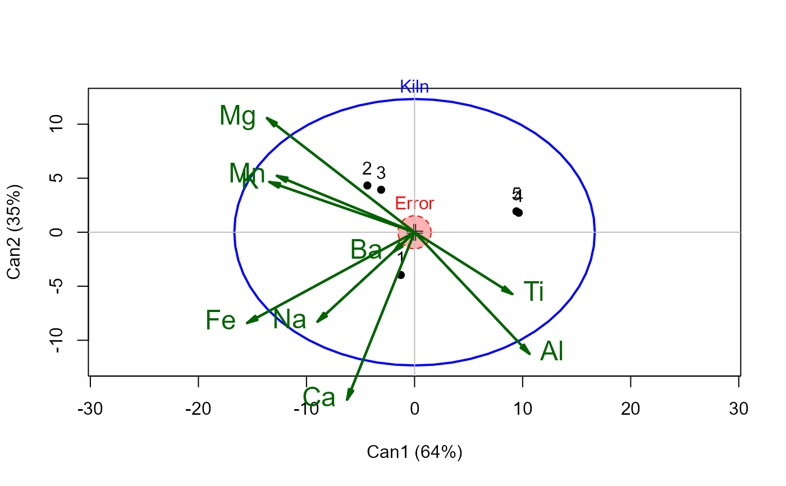

Chemical Analysis of Romano-British Pottery
Pottery2.RdResults of chemical analyses of 48 specimens of Romano-British pottery published by Tubb et al. (1980).
The numbers are the percentage of various metal oxides found in each sample
for elements of concentrations greater than 0.01%.
This is the original data set from Tubb et al. (1980), in contrast to Pottery.
data(Pottery2)Format
A data frame with 48 observations on the following 12 variables.
Regiona factor with levels
GlNFWalesSitea factor with levels
AshleyRailsCaldicotGloucesterIsleThornsLlanedrynKilna factor with levels
12345Alamount of aluminum oxide, \(Al_2O_3\)
Feamount of iron oxide, \(Fe_2O_3\)
Mgamount of magnesium oxide, MgO
Caamount of calcium oxide, CaO
Naamount of sodium oxide, \(Na_2O\)
Kamount of potassium oxide, \(K_2O\)
Tiamount of titanium oxide, \(TiO_2\)
Mnamount of manganese oxide, MnO
Baamount of BaO
Details
The specimens are identified by their rownames in the data frame.
Kiln indicates at which kiln site the pottery was found;
Site gives the location names of those sites.
The kiln sites come from three Regions, ("Gl"=1, "Wales"=(2, 3), "NF"=(4, 5)),
where the full names are "Gloucester", "Wales", and "New Forrest".
The variable Kiln comes pre-supplied with contrasts to test interesting
hypotheses related to Site and Region.
Source
Originally slightly modified from files by David Carlson,
now at RBPottery.
References
Baxter, M. J. 2003. Statistics in Archaeology. Arnold, London.
Carlson, David L. 2017. Quantitative Methods in Archaeology Using R. Cambridge University Press, pp 247-255, 335-342.
Tubb, A., A. J. Parker, and G. Nickless. 1980. The Analysis of Romano-British Pottery by Atomic Absorption Spectrophotometry. Archaeometry, 22, 153-171.
See also
Examples
data(Pottery2)
# contrasts for Kiln correspond to between Region [,1:2] and within Region [,3:4]
contrasts(Pottery2$Kiln)
#> G.WN W.N W2.W3 NF4.NF5
#> 1 4 0 0 0
#> 2 -1 1 1 0
#> 3 -1 1 -1 0
#> 4 -1 -1 0 1
#> 5 -1 -1 0 -1
pmod <-lm(cbind(Al,Fe,Mg,Ca,Na,K,Ti,Mn,Ba)~Kiln, data=Pottery2)
Anova(pmod)
#>
#> Type II MANOVA Tests: Pillai test statistic
#> Df test stat approx F num Df den Df Pr(>F)
#> Kiln 4 2.2268 5.3025 36 152 1.391e-13 ***
#> ---
#> Signif. codes: 0 '***' 0.001 '**' 0.01 '*' 0.05 '.' 0.1 ' ' 1
# extract coefficient names for linearHypotheses
coefs <- rownames(coef(pmod))[-1]
# test differences among regions
linearHypothesis(pmod, coefs[1:2])
#>
#> Sum of squares and products for the hypothesis:
#> Al Fe Mg Ca Na K
#> Al 151.65057276 -40.53893273 -90.32962804 6.93651249 1.398166750 -49.20000025
#> Fe -40.53893273 233.23920836 52.50699833 35.47123205 11.719323014 45.78071096
#> Mg -90.32962804 52.50699833 57.42066307 0.62797642 0.709273843 33.46637847
#> Ca 6.93651249 35.47123205 0.62797642 6.58156100 2.093516673 3.22560998
#> Na 1.39816675 11.71932301 0.70927384 2.09351667 0.670448844 1.32056847
#> K -49.20000025 45.78071096 33.46637847 3.22560998 1.320568467 20.74890960
#> Ti 9.24314119 -5.42115551 -5.88182924 -0.07236204 -0.075203080 -3.43159076
#> Mn -2.43619545 2.85554855 1.73219182 0.25851436 0.097397909 1.11376927
#> Ba 0.03092721 0.04339183 -0.01183411 0.01008451 0.003094097 -0.00245479
#> Ti Mn Ba
#> Al 9.243141192 -2.436195e+00 3.092721e-02
#> Fe -5.421155511 2.855549e+00 4.339183e-02
#> Mg -5.881829237 1.732192e+00 -1.183411e-02
#> Ca -0.072362038 2.585144e-01 1.008451e-02
#> Na -0.075203080 9.739791e-02 3.094097e-03
#> K -3.431590759 1.113769e+00 -2.454790e-03
#> Ti 0.602509224 -1.777282e-01 1.199732e-03
#> Mn -0.177728182 6.098404e-02 1.518182e-05
#> Ba 0.001199732 1.518182e-05 1.830653e-05
#>
#> Sum of squares and products for error:
#> Al Fe Mg Ca Na K
#> Al 96.20132468 21.11225325 5.506287013 -2.096574026 0.569593506 10.55401948
#> Fe 21.11225325 19.88942753 2.157729870 -0.685039740 0.918994935 4.50978519
#> Mg 5.50628701 2.15772987 16.303520519 0.274558961 0.090970260 5.88807922
#> Ca -2.09657403 -0.68503974 0.274558961 1.760672078 -0.025830519 0.24870156
#> Na 0.56959351 0.91899494 0.090970260 -0.025830519 0.735820130 0.56027961
#> K 10.55401948 4.50978519 5.888079221 0.248701558 0.560279610 14.63247117
#> Ti 0.96768701 1.99152987 0.041040519 -0.120881039 0.062710260 0.32167922
#> Mn 0.37119545 0.26490145 -0.131911818 0.009635636 0.059562091 0.10489073
#> Ba 0.07495727 0.02567727 -0.007025091 0.004785182 0.004963455 0.01005364
#> Ti Mn Ba
#> Al 0.967687013 0.371195455 0.0749572727
#> Fe 1.991529870 0.264901455 0.0256772727
#> Mg 0.041040519 -0.131911818 -0.0070250909
#> Ca -0.120881039 0.009635636 0.0047851818
#> Na 0.062710260 0.059562091 0.0049634545
#> K 0.321679221 0.104890727 0.0100536364
#> Ti 1.368520519 0.015238182 0.0037669091
#> Mn 0.015238182 0.089093964 0.0030718182
#> Ba 0.003766909 0.003071818 0.0004249909
#>
#> Multivariate Tests:
#> Df test stat approx F num Df den Df Pr(>F)
#> Pillai 2 1.86181 53.88966 18 72 < 2.22e-16 ***
#> Wilks 2 0.00383 58.97836 18 70 < 2.22e-16 ***
#> Hotelling-Lawley 2 34.11493 64.43932 18 68 < 2.22e-16 ***
#> Roy 2 25.10339 100.41357 9 36 < 2.22e-16 ***
#> ---
#> Signif. codes: 0 '***' 0.001 '**' 0.01 '*' 0.05 '.' 0.1 ' ' 1
# test differences within regions B, C
linearHypothesis(pmod, coefs[3:4])
#>
#> Sum of squares and products for the hypothesis:
#> Al Fe Mg Ca Na K
#> Al 3.1562321 1.8776786 1.6154857 -0.19634643 0.31648036 -0.74230357
#> Fe 1.8776786 1.7032143 1.6611429 -0.16853571 0.33919643 -1.02896429
#> Mg 1.6154857 1.6611429 1.6629886 -0.16227714 0.34223429 -1.08144286
#> Ca -0.1963464 -0.1685357 -0.1622771 0.01677929 -0.03300607 0.09801071
#> Na 0.3164804 0.3391964 0.3422343 -0.03300607 0.07059089 -0.22565893
#> K -0.7423036 -1.0289643 -1.0814429 0.09801071 -0.22565893 0.76313929
#> Ti 0.3105857 0.2461429 0.2322686 -0.02473714 0.04694429 -0.13454286
#> Mn 0.0667875 0.0777250 0.0795600 -0.00750750 0.01647875 -0.05377750
#> Ba 0.0062575 0.0054250 0.0052360 -0.00053950 0.00106575 -0.00317750
#> Ti Mn Ba
#> Al 0.31058571 0.06678750 0.00625750
#> Fe 0.24614286 0.07772500 0.00542500
#> Mg 0.23226857 0.07956000 0.00523600
#> Ca -0.02473714 -0.00750750 -0.00053950
#> Na 0.04694429 0.01647875 0.00106575
#> K -0.13454286 -0.05377750 -0.00317750
#> Ti 0.03698857 0.01055000 0.00079400
#> Mn 0.01055000 0.00387575 0.00024275
#> Ba 0.00079400 0.00024275 0.00001735
#>
#> Sum of squares and products for error:
#> Al Fe Mg Ca Na K
#> Al 96.20132468 21.11225325 5.506287013 -2.096574026 0.569593506 10.55401948
#> Fe 21.11225325 19.88942753 2.157729870 -0.685039740 0.918994935 4.50978519
#> Mg 5.50628701 2.15772987 16.303520519 0.274558961 0.090970260 5.88807922
#> Ca -2.09657403 -0.68503974 0.274558961 1.760672078 -0.025830519 0.24870156
#> Na 0.56959351 0.91899494 0.090970260 -0.025830519 0.735820130 0.56027961
#> K 10.55401948 4.50978519 5.888079221 0.248701558 0.560279610 14.63247117
#> Ti 0.96768701 1.99152987 0.041040519 -0.120881039 0.062710260 0.32167922
#> Mn 0.37119545 0.26490145 -0.131911818 0.009635636 0.059562091 0.10489073
#> Ba 0.07495727 0.02567727 -0.007025091 0.004785182 0.004963455 0.01005364
#> Ti Mn Ba
#> Al 0.967687013 0.371195455 0.0749572727
#> Fe 1.991529870 0.264901455 0.0256772727
#> Mg 0.041040519 -0.131911818 -0.0070250909
#> Ca -0.120881039 0.009635636 0.0047851818
#> Na 0.062710260 0.059562091 0.0049634545
#> K 0.321679221 0.104890727 0.0100536364
#> Ti 1.368520519 0.015238182 0.0037669091
#> Mn 0.015238182 0.089093964 0.0030718182
#> Ba 0.003766909 0.003071818 0.0004249909
#>
#> Multivariate Tests:
#> Df test stat approx F num Df den Df Pr(>F)
#> Pillai 2 0.3584150 0.8733388 18 72 0.610701
#> Wilks 2 0.6493732 0.9370114 18 70 0.538962
#> Hotelling-Lawley 2 0.5279530 0.9972445 18 68 0.473824
#> Roy 2 0.5041642 2.0166569 9 36 0.065976 .
#> ---
#> Signif. codes: 0 '***' 0.001 '**' 0.01 '*' 0.05 '.' 0.1 ' ' 1
heplot(pmod, fill=c(TRUE,FALSE), hypotheses=list("Region" =coefs[1:2], "WithinBC"=coefs[3:4]))
 # all pairwise views; note that Ba shows no effect
pairs(pmod, fill=c(TRUE,FALSE))

# canonical view, via candisc::heplot
if (require(candisc)) {
# canonical analysis: how many dimensions?
(pcan <- candisc(pmod))
heplot(pcan, scale=18, fill=c(TRUE,FALSE), var.col="darkgreen", var.lwd=2, var.cex=1.5)
if (FALSE) {
heplot3d(pcan, scale=8)
}
}

# all pairwise views; note that Ba shows no effect
pairs(pmod, fill=c(TRUE,FALSE))

# canonical view, via candisc::heplot
if (require(candisc)) {
# canonical analysis: how many dimensions?
(pcan <- candisc(pmod))
heplot(pcan, scale=18, fill=c(TRUE,FALSE), var.col="darkgreen", var.lwd=2, var.cex=1.5)
if (FALSE) {
heplot3d(pcan, scale=8)
}
}
